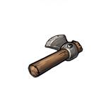
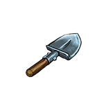
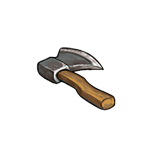
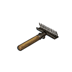
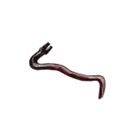

Получено: файл; исходный URL. Оригинальные байты, полученные по ссылке; идентичность архиву не подтверждена.

Строительная коллекция
ВКонтакте; дата источника не указана- Тип
- Коллекции
- Версия и дата
- ВКонтакте; дата источника не указана
Элементы коллекции
















Данные по источнику · ВКонтакте · дата источника не указана
Предварительно: один источник; требует сверки. Требуется сверка.
- Награда
- Доска и 200 опыта
- Где копать
- Маяк, башня, айти-могила
- Состав (источник Zombie-island)
- Топорик; Сапёрная лопата; Большой топор; Грабли; Лом.
- Награда (источник Zombie-island)
- 1 Доска; 200 Опыт.
- Где копать Строительную коллекцию в Зомби Ферме лопатами
- Башня; Айти-могила; Плюшевая звезда; Праздничная ночь; Чудовище; Телескоп.
- Строительная коллекция выпадает из мешков Кладоискателей
- Кладоискатель; Кладоискатель с мозгами.
- Строительная коллекция выпадает из секретного клада, сокровищ и ценностей
- Секретный клад; Сундук Чудовища; Коллекционная посылка; Коллекционный; Коллекционер; Ледяной дворец; Осенний презент 1; Скромный презент.
- Строительная коллекция попадается при колдовании Палочками дома
- Палочка-выручалочка.
Данные по источнику · ВКонтакте, ZombieS Forever · дата редакции не установлена
Предварительно: Историческая фанатская страница; независимость от других источников не установлена. Возможны различия версий и дат.. Требуется сверка.
- Награда по ZombieS Forever
- Доска и 200 опыта
- Места получения: выборка из источника
- Маяк, башня, айти-могила.
Данные по источнику · браузерная версия; платформа не указана · дата редакции не установлена
Предварительно: Содержимое списка: изображения и колонки могут терять смысл при извлечении текста; отдельная страница и дата не проверены. Подписи alt иногда ошибочны.. Требуется сверка.
Данные по источнику · Мой Мир (Mail.ru); историческая таблица · дата редакции не установлена
Предварительно: Источник сам использует знаки вопроса; не следует считать такие места подтверждёнными. Возможны изменения патча и платформы; независимость от других справочников не доказана.. Требуется сверка.
Данные по источнику · браузерная версия; на сайте указана игра ВКонтакте · дата редакции не установлена
Предварительно: Исторический текст; сильно совпадает со справкой Zommbie.at.ua, независимость не доказана. Отрицания и доступность могут измениться с патчем.. Требуется сверка.
- Где искать по странице «Зомбастики»
- Башня, маяк, айти могила.
Данные по источнику · браузерная социальная версия; платформа по источнику или не уточнена · 17.11.2017 — дата статьи
Предварительно: Историческая статья; версия и её точная редакция нуждаются в сверке. Возможны общие источники.. Требуется сверка.
- Состав
- Топорик, сапёрная лопатка, грабли, лом, большой топор.
- Обмен
- 1 деревянная доска и 200 опыта.
- Поиск
- Розовые плюшевидные звёздочки, башня, чудище, могила, праздничная ночь и карета; формулировки статьи не обязательно совпадают с официальными именами декора.
- Дополнительно
- По статье предметы бывают в мешках кладоискателей, секретном кладе, сундуке чудища, первом осеннем и скромном презентах, коллекционном призе и посылке. Палочкой — под сапёрным слоником и декорацией в виде мозгов.
Данные по источнику · историческая браузерная версия, платформа не указана · 10.01.2014 — дата в каталоге; дата редакции материала неизвестна
Предварительно: Фанатский список без вероятностей и уточнения площадки; независимость от других источников не установлена.. Требуется сверка.
- Где искать по списку сайта
- Башня, маяк, айти могила
- Оговорка
- Список может относиться к разным условиям, инструментам и периодам игры; не доказывает гарантированное выпадение. Заявления «только» и «невозможно» относятся лишь к времени и версии источника.
Связанные сущности
нет проверенных связей — требуется сверка.
Источники
- прочитано; проверка 2026-11-21
- прочитано: Zombie-island.moy.su; проверка 2026-11-21
- ZOMBIA: прочитана карточка в списке
- Ссылка на отдельную страницу; отдельно не проверена
- Zombiemail: строка таблицы коллекций; Мой Мир
- Зомбастики: прочитана соответствующая строка; возможная копия другого справочника
- Прочитанная историческая статья
- zommbie.at.ua: где искать коллекции